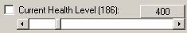

The checkbox represents the value of the value on its caption. You can alter the value using the scroll-box.
If GTA SA is running, and you have loaded / started a game, the relevant value will automatically be changed in game memory. The button will change the scroll-value to a value that is represented on the button caption (either 0 or max). If you check the checkbox, the value you have set will be locked, and the in-game memory will accordingly set to this value as soon as this value gets changed by the game.
GTA SA is not always happy with us changing its memory too much, so each locked status bring a small crash risk. If you are using the control center with all the stats locked, please save your game progress often.
If you want to alt+tab out of the game to use the control center, please click ESC first to bring-up the game menu, and then alt+tab out of the game. GTA SA is also not happy with players that leave gameplay in the middle of some DirectX animations.
GTA SA Control Center needs to syncronize to the game in full due to excessive memory hooks. Please start the control center after you have started gta_sa, and loaded/started a game. If your system does not allow you to alt+tab out of the game to start the control center, you can also start the control center first, then the game. However, in this case, please avoid hitting any of the shortcuts that you have defined until your savegame is fully loaded, or a new game has fully started. Please also give a couple of seconds for the syncronization before you use the shortcut keys.
If you also want to disable the message box that says you need to start control center after you have started the game, please edit the GTASAConsole.ini file, and find the line InfoMsg=1 and change it to InfoMsg=0